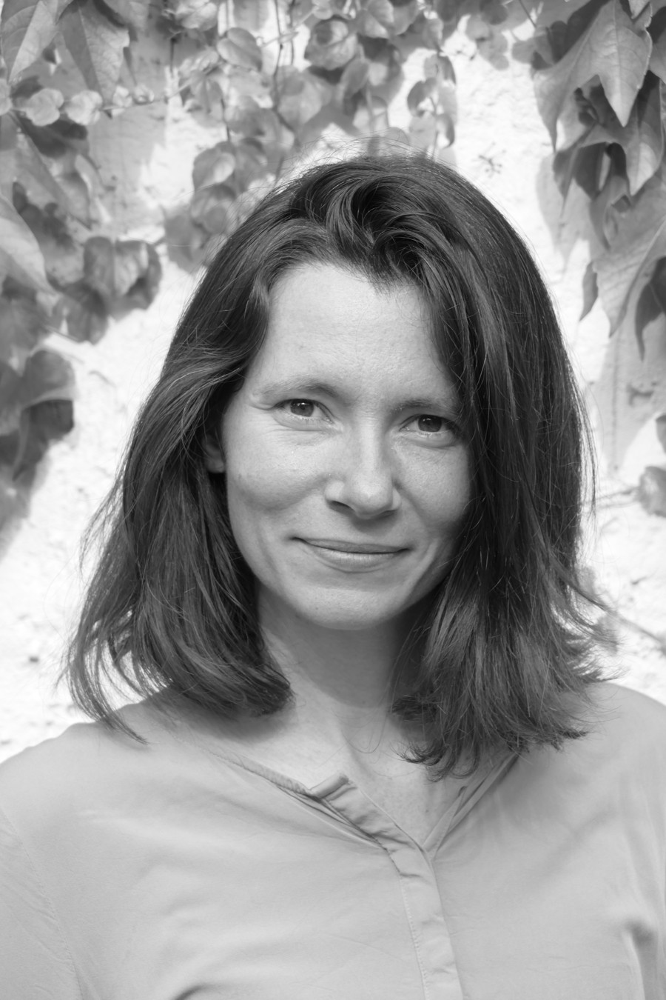

Educational psychology · Social networks · Education
Claudia Neuendorf
I study students’ peer relationships in classrooms and how they shape learning, social integration, and development. My research examines how classroom composition influences relationship patterns and how classroom environments can support children and adolescents.
Postdoctoral researcher · University of Potsdam
